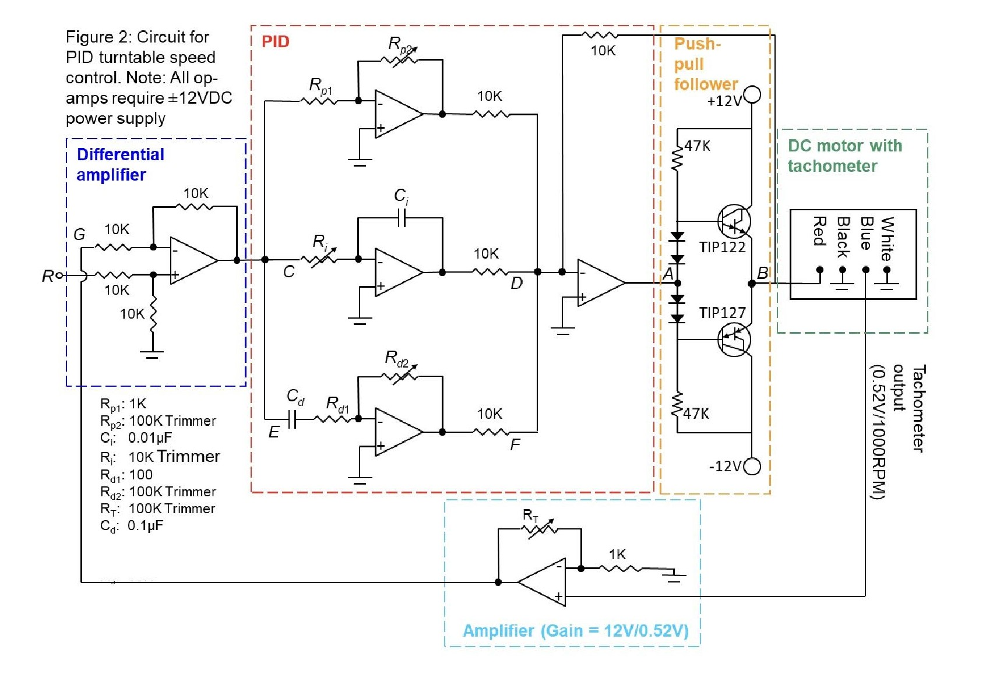

Problem:
 Precise control of rotational systems is crucial in many applications,
from robotics to industrial automation. This project addressed the challenge of creating a
turntable system that could accurately follow a complex, user-defined waveform. The primary
problem was to design and implement a control system that could minimize the error between the
desired waveform and the actual turntable position, while also ensuring stability and
responsiveness. Furthermore, the project explored the differences and relative merits of
implementing such a system using entirely analog components versus incorporating digital control
elements.
Precise control of rotational systems is crucial in many applications,
from robotics to industrial automation. This project addressed the challenge of creating a
turntable system that could accurately follow a complex, user-defined waveform. The primary
problem was to design and implement a control system that could minimize the error between the
desired waveform and the actual turntable position, while also ensuring stability and
responsiveness. Furthermore, the project explored the differences and relative merits of
implementing such a system using entirely analog components versus incorporating digital control
elements.
Technology Used:
- Operational amplifiers, resistors, capacitors, potentiometers for implementing the PID control loop.
- Turntable with a motor and a rotary encoder.
- Wave Generator
- DAQ (Data Acquisition System)
- LabVIEW
- Oscilloscope
What I Learned:
- PID Control Theory and Implementation: Gained a deep understanding of PID control principles and practical experience tuning PID gains for optimal performance.
- Analog Circuit Design: Developed skills in designing and building analog circuits for signal conditioning, amplification, and PID control.
- DAQ and LabVIEW Programming (Hybrid System): Gained experience using a DAQ and LabVIEW for data acquisition and control.
- System Integration: Learned how to integrate various hardware and software components to create a complete control system.
- Advantages of Analog Control: The analog version of the PID turntable offers several distinct advantages. It is generally simpler to implement and requires less complex software or programming. This can lead to faster development times and lower overall system cost. Furthermore, the direct, continuous nature of analog control results in smoother responses and avoids potential quantization errors or delays associated with digital systems.
Looking Ahead:
- Optimizing the PID gains for even better tracking performance.
- Implementing more advanced control algorithms (e.g., feed-forward control) to further reduce tracking error.
- Exploring the use of a microcontroller for digital control, potentially offering a more compact and cost-effective solution compared to the DAQ-based hybrid system.
- Further investigation into the advantages of the analog system.